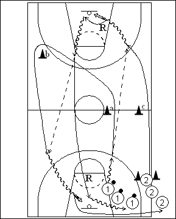

Catégorie : FASTBREAK (Fb-006)
Déroulement
- Deux files de joueurs à une baseline dans un coin de terrain. Une file de joueurs avec ballons à hauteur du block le long de la ligne de la raquette. Une autre file à hauteur de la ligne de lancers-francs le long de la ligne latérale.
- Les premiers joueurs de ces files partent en même temps. Le premier joueur de la file 1 effectue un (voire deux) dribble vers la ligne médiane, tandis que le premier joueur de la file 2 fonce vers l’avant en passant derrière le cône c pour ensuite recevoir le ballon pour un lay-up. Il effectue son rebond, réalise à son tour un (voire deux) dribble vers le milieu et fait la longue passe à 1 qui a sprinté autour des cônes a et b pour ensuite appeler le ballon pour un lay-up. La vague de deux suivante démarre quand le premier rebond est effectué.
- 2 sprinte pour réaliser le deuxième rebond et aller ensuite dans la file 1. Après son lay-up, 1 va en 2.
Coaching points
- Permettre deux dribbles avant la longue passe, le but étant de recevoir le ballon pour un lay-up sans dribble.
- Drill à rythme soutenu : 2 doit essayer de réaliser le deuxième rebond avant que le ballon ne touche le sol après le lay-up de 1 !